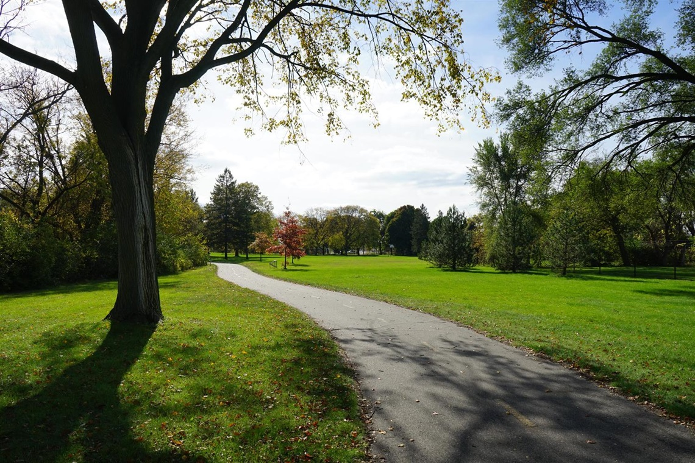

City Inaugurates Eco-Friendly Community Park
By Jane Reporter | June 9, 2025
The city officially opened a brand new eco-friendly community park today, complete with modern playgrounds, walking trails, and native vegetation designed to promote biodiversity.
Mayor John Doe praised the initiative: "This is not just a park, it's a statement about our future and our children."
Features of the Park
- Solar-powered lighting
- Recycling bins throughout the park
- Free Wi-Fi zones
- Dedicated bike lanes and scooter parking
Community Reaction
Local residents have expressed enthusiasm about the new space. "It’s clean, safe, and finally gives us a place to gather outdoors," said Sarah Johnson, a mother of two.